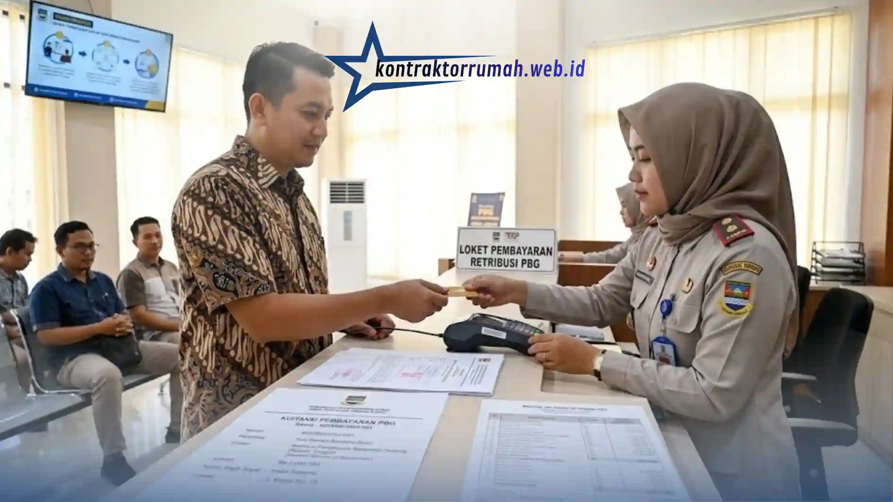

Membangun atau merenovasi rumah kini tak lagi menggunakan istilah IMB (Izin Mendirikan Bangunan), melainkan PBG (Persetujuan Bangunan Gedung) sejak berlakunya PP No. 16 Tahun 2021. Perubahan ini sering membuat bingung, terutama saat menyusun anggaran. Memahami biaya izin PBG sangat penting agar proyek konstruksi Anda tidak terhambat masalah legalitas di kemudian hari.
Poin Penting
- IMB kini diganti PBG (Persetujuan Bangunan Gedung) sejak berlakunya PP No. 16 Tahun 2021.
- Biaya PBG tidak sama di setiap daerah karena mengacu pada Perda masing-masing.
- Tiga komponen biaya: retribusi daerah (utama), jasa konsultan (opsional), dan biaya administrasi lain.
- Rumus: Luas Bangunan × Indeks Terintegrasi × Tingkat Penggunaan Jasa × HSR.
- Contoh rumah 100 m² dengan HSR Rp20.000 menghasilkan retribusi Rp2.000.000; cek HSR resmi di Dinas PUPR daerah Anda.
Komponen Biaya Pengurusan PBG
Biaya pengurusan PBG (retribusi bangunan) tidak dipatok dengan angka pasti yang sama di setiap daerah, karena mengacu pada Peraturan Daerah (Perda) masing-masing. Secara umum, komponen biayanya meliputi:
- Retribusi daerah — biaya utama yang disetor ke kas daerah. Besarnya tergantung pada fungsi, klasifikasi, dan luas bangunan.
- Biaya jasa konsultan (opsional) — jika Anda menggunakan jasa arsitek atau konsultan perizinan untuk menggambar denah teknis sebagai syarat PBG.
- Biaya administrasi lainnya — termasuk fotokopi berkas, meterai, dan survei lokasi jika diperlukan.
Formula Dasar & Contoh Perhitungan Retribusi PBG
Pemerintah menetapkan rumus baku untuk menghitung retribusi PBG:
Luas Bangunan × Indeks Terintegrasi × Tingkat Penggunaan Jasa × Harga Satuan Retribusi (HSR)
Sebagai ilustrasi, misalkan Anda ingin membangun rumah tinggal standar di sebuah kota dengan HSR Rp20.000 per meter persegi:
| Komponen | Nilai |
|---|---|
| Luas bangunan | 100 m² |
| Indeks terintegrasi | 1,0 (rumah tinggal sederhana) |
| Tingkat penggunaan jasa | 1,0 (bangunan baru) |
| HSR | Rp20.000 |
| Total retribusi | Rp2.000.000 |

Retribusi PBG dibayarkan sesuai nilai yang ditetapkan pemerintah daerah setempat.
Mengurus PBG di awal bukan sekadar formalitas, melainkan jaminan bahwa bangunan Anda berdiri secara sah dan sesuai standar keselamatan. Pastikan Anda mengecek langsung angka HSR di Dinas PUPR atau situs resmi pemerintah daerah setempat untuk mendapatkan angka yang paling presisi, karena nilainya bisa berubah dan berbeda antar wilayah.
FAQ Seputar Biaya Izin PBG
Dengan memahami komponen biaya, rumus retribusi, dan contoh perhitungannya, Anda bisa menyusun anggaran perizinan yang lebih realistis sejak awal. Jika Anda membutuhkan pendampingan dari perencanaan hingga pembangunan, tim jasa kontraktor rumah kami siap membantu.